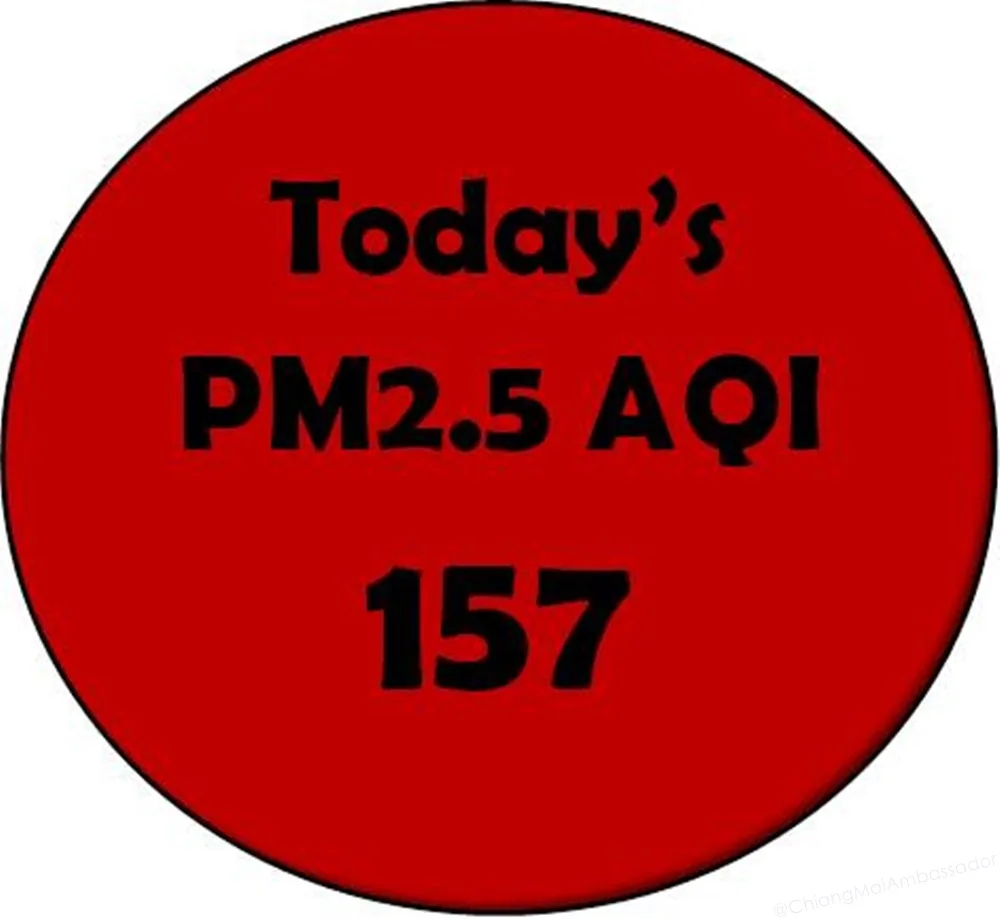

Smoky season is the part of Chiang Mai that nobody puts on the brochure. It is real, it is significant, and if you are planning to move here or are deciding whether to stay through February-April, you need to understand what you are getting into rather than finding out mid-March when the mountains disappear behind a wall of haze.
This is not a scare piece. Plenty of people live through smoky season every year and get on with it. But "getting on with it" requires preparation, not optimism.
What Causes the Smoke
The primary cause is agricultural burning. After the rice and corn harvest, farmers across Chiang Mai province and the wider northern Thailand, Myanmar, and Laos region burn their fields to clear crop residue before the next planting season. This practice covers hundreds of thousands of acres and happens simultaneously across the region from roughly January through April.
The smoke is not just from Thai fields. Wind patterns carry smoke across the border from Myanmar and Laos, meaning that even if Thai authorities ban burning in Chiang Mai province (which they do, with limited enforcement), the AQI continues rising because of regional fires that Thailand cannot control.
The Ping River valley geography compounds the problem. Chiang Mai sits in a bowl surrounded by mountains. During the dry season, temperature inversions trap pollution close to the ground. What would disperse over flat terrain concentrates in the city.
What "Smoky" Actually Means in Numbers
AQI (Air Quality Index) is the standard measure. The scale for context:
- 0-50: Good. Normal outdoor activity fine.
- 51-100: Moderate. Unusually sensitive people may notice it.
- 101-150: Unhealthy for sensitive groups. Respiratory conditions, elderly, children should reduce prolonged outdoor activity.
- 151-200: Unhealthy. Everyone may experience health effects. Reduce outdoor activity.
- 201-300: Very Unhealthy. Health alert. Limit outdoor activity.
- 300+: Hazardous. Emergency conditions. Avoid outdoor activity.
During peak smoky season in Chiang Mai, AQI readings in the 150-250 range are not unusual. In severe years, readings have exceeded 300 for days at a stretch. Even in an average year, spending March in Chiang Mai means regularly seeing readings above 150.
Monitor real-time AQI at AQI.cn or IQAir. Both show Chiang Mai station data. Check in the morning before deciding whether to exercise or keep windows open.
The Health Reality
Short-term exposure to high AQI causes eye irritation, throat discomfort, coughing, and headaches. Most healthy adults experience these as a nuisance rather than a serious issue. The concern is for:
- People with asthma, COPD, or other respiratory conditions: high AQI can trigger serious episodes
- Cardiovascular conditions: PM2.5 particles enter the bloodstream and increase cardiac risk
- Children and elderly: higher sensitivity, longer recovery
- Pregnant women: foetal exposure to PM2.5 is a documented risk
- People who exercise outdoors: heavy breathing during exercise significantly increases particle intake
For healthy adults who are not exercising intensely outdoors during peak periods, smoky season is unpleasant but manageable. For anyone in the sensitive groups above, the honest advice is to leave Chiang Mai for February through April and return in May when the rains come and clear the air within a week.
What You Need to Survive Smoky Season
N95 or KN95 Masks
The standard surgical mask offers minimal protection against PM2.5. You need a mask rated N95 or KN95. These filter 95% of particles 0.3 microns or larger, which covers the PM2.5 range that damages lungs. They are available at pharmacies across Chiang Mai (Boots, Watsons, independent pharmacies) for 25-80 THB per mask. Buy a box.
Fit matters. A properly fitted N95 creates a seal against your face. Gaps around the nose or chin reduce effectiveness significantly. The valve-style masks are more comfortable for extended wear but offer no protection to others around you (you exhale unfiltered).
Air Purifier
A HEPA air purifier for your bedroom is the single most effective investment for smoky season. Running it while you sleep means 8 hours per day in clean air, which your respiratory system uses to recover from daytime exposure.
What to buy: any purifier with a true HEPA filter (not "HEPA-type" or "HEPA-like") and a CADR (Clean Air Delivery Rate) appropriate for your room size. Xiaomi, Levoit, and Coway models are common in Chiang Mai and available on Lazada/Shopee. Budget 2,500-6,000 THB for a unit that handles a bedroom.
Seal your room as much as possible when running the purifier. Air conditioning with the ventilation mode off (recirculating internal air, not drawing from outside) keeps purified air in and smoke out.
Indoor Lifestyle Adjustments
Practical adjustments that make smoky season liveable:
- Exercise indoors during high AQI days. Gyms, yoga studios, and swimming pools in Chiang Mai are used to this and busy through smoky season.
- Keep windows and doors closed when AQI is above 100. Air conditioning is not optional during this period.
- Consider working from a co-working space or cafe with good air filtration rather than a poorly sealed apartment.
- Hydrate more than usual. The dry air compounds the irritation from smoke particles.
- Monitor the AQI app before any outdoor plans, including the morning coffee run.
The Timing: When It Starts and When It Ends
The general pattern, though it varies by year:
- January: Air quality starts declining from the dry season baseline. Smoke occasional.
- February: Smoky season beginning. AQI rising. Some bad days.
- March: Peak. Consistently high AQI. Mountains invisible. The city smells of smoke daily.
- Early April: Songkran (Thai New Year) water festival is in mid-April. The water throwing helps wash some particles down, but this is also often still peak season.
- Late April: First rains begin. AQI starts dropping as rain washes the air.
- May: Rainy season begins in earnest. Air clears rapidly and dramatically. The mountains reappear. Chiang Mai turns green. This is genuinely one of the most beautiful times in the city.
The end of smoky season is abrupt and very welcome. The first heavy rain in late April or early May clears the air in a matter of hours. The relief is palpable across the city.
Leaving vs Staying
The honest framework:
Reasons to stay through smoky season: You have a lease, school enrollment, visa situation, or other logistical reason. You are healthy and do not exercise heavily outdoors. You have an air purifier and good masks. You understand it is temporary.
Reasons to leave: Respiratory or cardiovascular conditions. Children or elderly dependants. Pregnancy. You are a serious outdoor runner or cyclist (losing 2 months of outdoor training has real cost). You simply hate it and can afford to be flexible.
Popular escape options for Chiang Mai residents during smoky season: Koh Lanta, Koh Samui, Pai (higher elevation but also smoky, often worse), Chiang Rai (also smoky), Bangkok (urban pollution, not smoke, generally better AQI in Feb-April than Chiang Mai), Bali (Indonesia), Japan, Vietnam (Hanoi has its own issues).
What Does Not Help
Some things circulate in expat circles that do not actually work:
- Surgical masks: Do not filter PM2.5. Look like protection but are not.
- "Natural" air purifiers (plants, charcoal bags): Ineffective at the PM2.5 scale. Use a real HEPA unit.
- Staying in air-conditioned rooms with the ventilation open: Bringing outside air in makes it worse. Recirculate.
- Posting about it on Facebook: This is a long-running joke among long-term residents. The smoke does not respond to social media pressure.
Guru Tip: The clearest air in Chiang Mai during smoky season is in the hour immediately after a rain shower. These are rare in February-March but more common in April. When rain comes, go outside immediately afterward. The air is briefly clean, the mountains reappear, and the city is genuinely beautiful for an hour before the smoke settles back in. These moments remind you why people live here year-round despite everything.
Bottom Line
- Smoky season runs February-April. March is typically worst.
- AQI regularly exceeds 150, sometimes 250. Monitor daily at AQI.cn or IQAir.
- N95 mask for outdoors. HEPA air purifier for your bedroom. These are not optional during bad days.
- Healthy adults can manage it. People with respiratory/cardiovascular conditions, children, and pregnant women should consider leaving.
- May brings the rains and the air clears fast. The city is beautiful again by mid-May.
Related: Living Better in Thailand and Cost of Living in Chiang Mai.